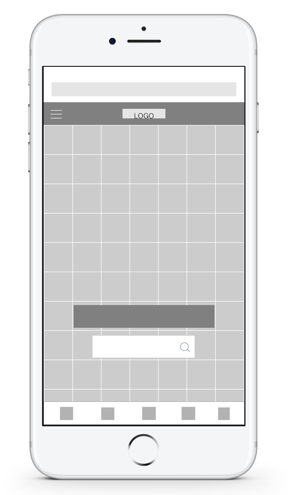
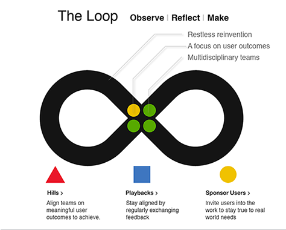

Week 4
Meme Culture Wireframes

Desktop Homepage (Version 1)

Desktop Homepage (Version 2)
Desktop Homepage (Version 3)

Mobile Homepage (Version 1)

Mobile Homepage (Version 2)
Further Investigation of Intention in Design
IBM is investing more than $100 million in becoming design centered after having a technology-first culture for many years.
Three shifts that triggered the investment:
Technology: New demand in technology, specifically the cloud, analytics, and mobile.
Demographics: Millennials are digital natives; they demand a high level of user experience
Digitization: Every industry—from academia to finance, healthcare to security—has now gone digital.
IBM’s design-thinking framework is an unceasing cycle consisting of three stages:
Observe: Empathetically understand the world that customers and users inhabit.
Reflect: Process information and identify needs and opportunities.
Make: Transform ideas into products and services that provide positive experience outcomes for users.

IBM's design-thinking framework
Referenced Links